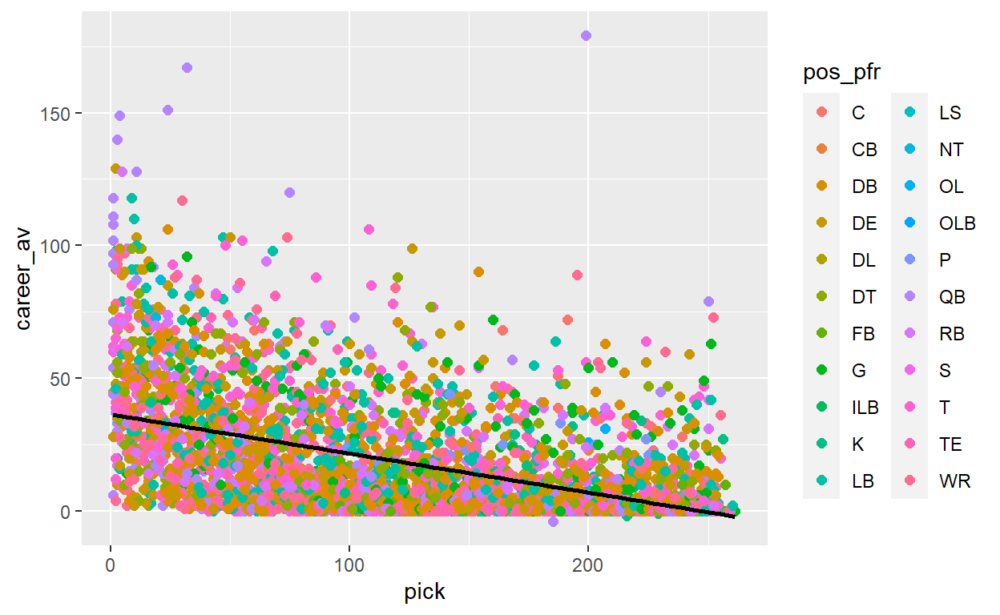
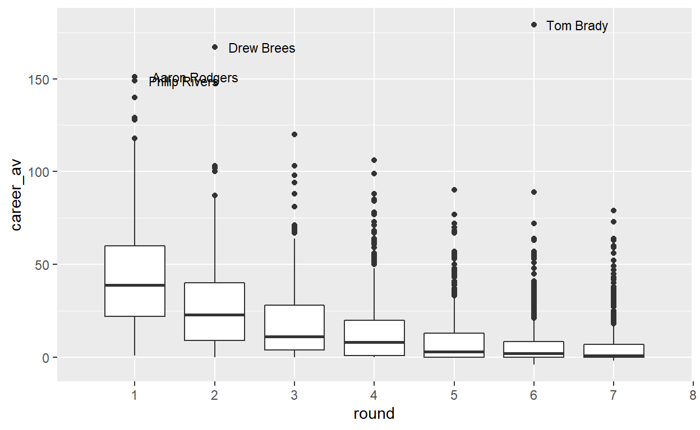
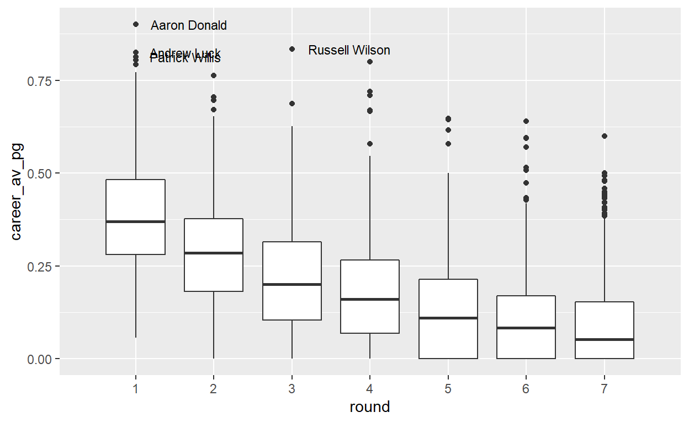

A look at the NFL draft, how career value is distributed historically by draft round and player position, and some interesting storylines to follow for the NFL’s big night
The NFL draft is arguably the most exciting day of the NFL offseason for the league office, team organizations, players, and fans. The worst teams from the previous season have the most to gain (assuming they haven’t traded away their extremely valuable picks well before draft day, which is on April 29th this year), as well as the highest potential of missing out on a franchise-altering player if they don’t pick correctly; the best teams, although likely having lower potential value picks, need a strategy if they are going to maximize the output of their draft capital.
A lot of analysis you will see leading up to draft day is related to scouting and analyzing how college players could measure up when they make the move to the pros, for the reasons I mentioned above: you want to know who has the best likelihood of succeeding in the NFL. The big questions this year go something like:
Teams and commentators understandably heavily weight scouting, finding comparable current NFL players for highly touted college players, and general player evaluation in regard to the plan when it comes to draft day. That being said, we have plenty of historical data to understand player outcomes once they have entered the league, and there is a ton of information to gain from taking a post-hoc approach to understanding draft performance, how certain rounds or positions should be viewed with a risk-reward lens, and identifying strategies to improve your team’s stock where other teams may not have done their homework.
The ‘Approximate Value’ calculation certainly has quirks and is not perfect, even by the creator’s admission, but it is a way to compare ‘value’ of players against one another with a single number, which is perfect for an analysis in aggregate such as this. You can read more about ‘Approximate Value’ here.
I have not seen too much recent content on this type of analysis, which could just be getting drowned out by scouting reports, rumors, and trades, and everything else happening before Draft Day, which is understandable, but this type of analysis and content is important and should be a significant part of any Draft Day kit as well, so let’s get into it!
Below I’ll share some ideas for understanding historical pick and positional value, explore past data to see if it can tell us anything about how teams should approach future drafts, and see if we can advise on any simple strategies teams could deploy that could help lead to better draft results.
Always need to shout out someone in these posts: thanks to Pranav Rajaram, Lee Sharpe, and Pro-Football-Reference for your work on NFL data, and the folks at RStudio for an amazing product.
player_av <- read_csv("https://raw.githubusercontent.com/pranavrajaram/nfldraft/main/pfravs.csv")
I have started with a scatterplot of all picks between 2000 and 2014, for all teams and positions, with pick number on the x-axis and career AV, also known as “approximate value” of a player for all games played in their career, on the y-axis, with a linear average line drawn through all picks.
Looking at all picks in this simplified way, we can see that on average, the better the pick the higher the players career AV will be for this dataset.
# All Players - Scatterplot - Career AV versus Pick Number
p_scatter <- player_av %>%
filter(draft_year >= 2000, draft_year <= 2015) %>%
ggplot(aes(x=pick, y=career_av, color=pos_pfr)) +
geom_point(size=2) +
geom_smooth(method=lm , color="black", se=FALSE)
print(p_scatter)

Next, I looked at the same dataset but instead of a scatterplot I viewed it as boxplots, grouped by draft round, which shows the distribution of Career AV within each round for the years 2000 through 2015, with the biggest outliers labeled for reference.
This view puts in perspective the anomaly that is Tom Brady.
# All Players - Boxplot - Career AV Distribution - by Round
p_box <- player_av %>%
filter(draft_year >= 2000, draft_year <= 2015) %>%
mutate(career_av = replace_na(career_av, 0)) %>%
ggplot(aes(y=career_av, x = round, group = round)) +
geom_boxplot() +
scale_x_discrete(limits=1:12, labels=1:12) +
geom_text(aes(group = round, label = ifelse(!between(career_av,-5.6*IQR(career_av), 5.6*IQR(career_av)),
player,'')),
position = position_dodge(width=0.75),
hjust = -.2, size = 3)
print(p_box)

In a tabular view of the table, we can see some summary statistics around average and median Career AV per round, as well as average years as a starter, average Pro Bowls, and average years named All-Pro.
by_round_av_stats <- player_av %>%
filter(draft_year >= 2000, draft_year <= 2015) %>%
mutate(career_av = replace_na(career_av, 0),
games = replace_na(games, 0)) %>%
add_count(player) %>%
# filter(career_av >= 0) %>%
group_by(round) %>%
summarise('player count' = sum(n),
'career av avg' = round(mean(career_av),1),
# c_av_25th_tile = quantile(career_av, c(0.25)),
'career av median' = median(career_av),
# c_av_75th_tile = quantile(career_av, c(0.75)),
'avg years starter' = round(mean(years_starter),1),
'avg pro bowls' = round(mean(pro_bowl),1),
'avg all pro' = round(mean(all_pro),1)) %>%
ungroup()
by_round_av_stats %>%
gt() %>%
gt_theme_538()
| round | player count | career av avg | career av median | avg years starter | avg pro bowls | avg all pro |
|---|---|---|---|---|---|---|
| 1 | 529 | 43.1 | 39 | 5.7 | 1.5 | 0.4 |
| 2 | 514 | 27.7 | 23 | 3.8 | 0.5 | 0.1 |
| 3 | 563 | 18.1 | 11 | 2.3 | 0.3 | 0.1 |
| 4 | 597 | 14.2 | 8 | 1.7 | 0.2 | 0.0 |
| 5 | 584 | 9.8 | 3 | 1.2 | 0.1 | 0.0 |
| 6 | 633 | 7.4 | 2 | 0.8 | 0.1 | 0.0 |
| 7 | 759 | 5.9 | 1 | 0.6 | 0.0 | 0.0 |
Next, I looked at the same view, except instead of Career AV overall I calculated “Career AV per game played”, which normalizes AV to a per game average, which should allow for a better comparison regardless of where players are in their career progression.
Andrew Luck and Patrick Willis stand out here, but make sense as outliers: they both retired near or at the height of their careers, so on a per game basis they retired with a very high “Career AV”, as opposed to other Hall of Fame-worthy players who likely play until their per game AV begins to decline.
# All Players - Boxplot - Career AV per Game Played Distribution - by Round
p_pg_box <- player_av %>%
filter(draft_year >= 2000, draft_year <= 2015) %>%
mutate(career_av = replace_na(career_av, 0),
games = replace_na(games, 0)) %>%
filter(career_av >= 0) %>%
mutate(career_av_pg = round(career_av / games, 7)) %>%
mutate(career_av_pg = replace_na(career_av_pg,0)) %>%
ggplot(aes(y=career_av_pg, x = round, group = round)) +
geom_boxplot() +
scale_x_discrete(limits=1:7, labels=1:7) +
geom_text(aes(group = round, label = ifelse(!between(career_av_pg,-3.25*IQR(career_av_pg), 3.25*IQR(career_av_pg)),
player,'')),
position = position_dodge(width=0.75),
hjust = -.2, size = 3)
print(p_pg_box)

And the tabular view of the same summary statistics as above are below:
by_round_av_pg_stats <- player_av %>%
filter(draft_year >= 2000, draft_year <= 2015) %>%
mutate(career_av = replace_na(career_av, 0),
games = replace_na(games, 0)) %>%
filter(career_av >= 0) %>%
mutate(career_av_pg = round(career_av / games, 7),
career_av_pg = replace_na(career_av_pg,0)) %>%
add_count(player) %>%
# filter(career_av >= 0) %>%
group_by(round) %>%
summarise('player count' = sum(n),
'career av per game avg' = round(mean(career_av_pg),4),
# c_av_25th_tile = quantile(career_av, c(0.25)),
'career av pg median' = round(median(career_av_pg),4),
# c_av_75th_tile = quantile(career_av, c(0.75)),
'avg years starter' = round(mean(years_starter),1),
'avg pro bowls' = round(mean(pro_bowl),1),
'avg all pro' = round(mean(all_pro),1)) %>%
ungroup()
by_round_av_pg_stats %>%
gt() %>%
gt_theme_538()
| round | player count | career av per game avg | career av pg median | avg years starter | avg pro bowls | avg all pro |
|---|---|---|---|---|---|---|
| 1 | 529 | 0.3832 | 0.3696 | 5.7 | 1.5 | 0.4 |
| 2 | 514 | 0.2840 | 0.2857 | 3.8 | 0.5 | 0.1 |
| 3 | 563 | 0.2151 | 0.2008 | 2.3 | 0.3 | 0.1 |
| 4 | 597 | 0.1773 | 0.1600 | 1.7 | 0.2 | 0.0 |
| 5 | 584 | 0.1321 | 0.1096 | 1.2 | 0.1 | 0.0 |
| 6 | 632 | 0.1088 | 0.0833 | 0.8 | 0.1 | 0.0 |
| 7 | 757 | 0.0927 | 0.0526 | 0.6 | 0.0 | 0.0 |
How about if we summarize by position? As you can see from the table below, positions with a proper sample and the highest ‘Approximate value’ per game are Tackle, Quarterback, Guard, and Center. This tells you that:
by_pos_av_pg_stats <- player_av %>%
filter(draft_year >= 2000, draft_year <= 2015) %>%
mutate(career_av = replace_na(career_av, 0),
games = replace_na(games, 0)) %>%
filter(career_av >= 0) %>%
mutate(career_av_pg = round(career_av / games, 7),
career_av_pg = replace_na(career_av_pg,0)) %>%
add_count(player) %>%
# filter(career_av >= 0) %>%
group_by(pos_pfr) %>%
summarise(player_count = sum(n),
career_av_per_game_avg = round(mean(career_av_pg),4),
# c_av_25th_tile = quantile(career_av, c(0.25)),
'career_av_pg_median' = round(median(career_av_pg),4),
# c_av_75th_tile = quantile(career_av, c(0.75)),
'avg years starter' = round(mean(years_starter),1),
'avg pro bowls' = round(mean(pro_bowl),1),
'avg all pro' = round(mean(all_pro),1)) %>%
filter(player_count >= 12) %>%
ungroup()
by_pos_av_pg_stats %>%
arrange(desc(career_av_per_game_avg)) %>%
gt() %>%
gt_theme_538()
| pos_pfr | player_count | career_av_per_game_avg | career_av_pg_median | avg years starter | avg pro bowls | avg all pro |
|---|---|---|---|---|---|---|
| T | 317 | 0.2709 | 0.2667 | 3.1 | 0.4 | 0.1 |
| QB | 199 | 0.2533 | 0.2188 | 2.1 | 0.5 | 0.0 |
| G | 222 | 0.2366 | 0.2632 | 2.8 | 0.4 | 0.1 |
| C | 101 | 0.2231 | 0.2353 | 3.0 | 0.5 | 0.1 |
| RB | 339 | 0.2032 | 0.1727 | 1.4 | 0.3 | 0.1 |
| LB | 487 | 0.2014 | 0.1637 | 2.3 | 0.3 | 0.1 |
| DT | 328 | 0.1984 | 0.1818 | 2.3 | 0.3 | 0.1 |
| DE | 377 | 0.1954 | 0.1786 | 2.5 | 0.4 | 0.1 |
| OLB | 23 | 0.1909 | 0.1622 | 1.4 | 0.1 | 0.0 |
| S | 13 | 0.1748 | 0.1875 | 1.8 | 0.2 | 0.1 |
| DB | 780 | 0.1670 | 0.1429 | 2.1 | 0.3 | 0.1 |
| WR | 541 | 0.1647 | 0.1322 | 1.7 | 0.3 | 0.1 |
| CB | 30 | 0.1494 | 0.1429 | 1.2 | 0.2 | 0.1 |
| OL | 40 | 0.1123 | 0.0000 | 1.1 | 0.1 | 0.0 |
| K | 33 | 0.1050 | 0.1402 | 0.0 | 0.4 | 0.2 |
| TE | 248 | 0.0968 | 0.0588 | 2.4 | 0.3 | 0.0 |
| P | 30 | 0.0924 | 0.1076 | 0.0 | 0.5 | 0.3 |
| FB | 42 | 0.0362 | 0.0198 | 1.5 | 0.0 | 0.0 |
What if there are differences in terms of ‘approximate value’ outcomes within positions AND by round? The table below yields a ton of information (showing only the top 35 combinations by AV per game), here are some highlights:
by_round_and_pos_av_pg_stats <- player_av %>%
filter(draft_year >= 2000, draft_year <= 2015) %>%
mutate(career_av = replace_na(career_av, 0),
games = replace_na(games, 0)) %>%
filter(career_av >= 0) %>%
mutate(career_av_pg = round(career_av / games, 7),
career_av_pg = replace_na(career_av_pg,0)) %>%
add_count(player) %>%
group_by(round, pos_pfr) %>%
summarise(player_count = sum(n),
career_av_per_game_avg = round(mean(career_av_pg),4),
# c_av_25th_tile = quantile(career_av, c(0.25)),
career_av_pg_median = round(median(career_av_pg),4),
# c_av_75th_tile = quantile(career_av, c(0.75)),
'avg years starter' = round(mean(years_starter),1),
'avg pro bowls' = round(mean(pro_bowl),1),
'avg all pro' = round(mean(all_pro),1)) %>%
filter(player_count >= 12) %>%
ungroup() %>%
head(35)
by_round_and_pos_av_pg_stats %>%
arrange(desc(career_av_pg_median)) %>%
gt() %>%
gt_theme_538()
| round | pos_pfr | player_count | career_av_per_game_avg | career_av_pg_median | avg years starter | avg pro bowls | avg all pro |
|---|---|---|---|---|---|---|---|
| 1 | QB | 43 | 0.5173 | 0.5497 | 5.7 | 1.3 | 0.1 |
| 1 | T | 62 | 0.4406 | 0.4541 | 6.4 | 1.4 | 0.3 |
| 1 | LB | 50 | 0.4373 | 0.4239 | 6.2 | 2.4 | 0.7 |
| 1 | RB | 44 | 0.4283 | 0.4219 | 4.6 | 1.2 | 0.4 |
| 1 | G | 17 | 0.4440 | 0.4167 | 6.8 | 2.6 | 0.8 |
| 2 | T | 43 | 0.3902 | 0.4069 | 4.7 | 0.4 | 0.1 |
| 2 | QB | 18 | 0.3516 | 0.3609 | 3.1 | 1.1 | 0.1 |
| 1 | DT | 49 | 0.3566 | 0.3590 | 5.6 | 1.1 | 0.4 |
| 1 | WR | 70 | 0.3537 | 0.3540 | 4.8 | 1.2 | 0.3 |
| 2 | C | 12 | 0.3587 | 0.3515 | 7.1 | 0.9 | 0.2 |
| 2 | G | 25 | 0.3492 | 0.3504 | 5.0 | 0.6 | 0.0 |
| 1 | DE | 68 | 0.3388 | 0.3387 | 5.4 | 1.3 | 0.4 |
| 2 | LB | 70 | 0.3039 | 0.3228 | 4.2 | 0.3 | 0.1 |
| 1 | DB | 86 | 0.3231 | 0.3190 | 5.8 | 1.4 | 0.4 |
| 3 | G | 31 | 0.3085 | 0.3077 | 3.8 | 0.5 | 0.1 |
| 3 | QB | 20 | 0.2724 | 0.2990 | 1.6 | 0.5 | 0.0 |
| 3 | T | 40 | 0.2941 | 0.2964 | 3.7 | 0.3 | 0.0 |
| 2 | RB | 42 | 0.3054 | 0.2912 | 2.2 | 0.5 | 0.1 |
| 4 | C | 19 | 0.2735 | 0.2747 | 2.5 | 0.0 | 0.0 |
| 2 | DB | 103 | 0.2574 | 0.2727 | 4.1 | 0.4 | 0.1 |
| 3 | RB | 41 | 0.2633 | 0.2706 | 1.5 | 0.4 | 0.1 |
| 2 | DT | 35 | 0.2592 | 0.2531 | 3.5 | 0.3 | 0.1 |
| 1 | TE | 18 | 0.2411 | 0.2504 | 7.6 | 1.3 | 0.1 |
| 2 | WR | 71 | 0.2581 | 0.2500 | 3.2 | 0.5 | 0.0 |
| 2 | DE | 51 | 0.2435 | 0.2396 | 3.3 | 0.4 | 0.0 |
| 3 | LB | 75 | 0.2288 | 0.2222 | 2.5 | 0.2 | 0.1 |
| 4 | DE | 51 | 0.1977 | 0.2069 | 2.5 | 0.4 | 0.1 |
| 3 | DE | 42 | 0.2117 | 0.2019 | 2.6 | 0.2 | 0.0 |
| 4 | DT | 45 | 0.1928 | 0.1974 | 2.2 | 0.2 | 0.0 |
| 2 | TE | 28 | 0.1767 | 0.1778 | 3.7 | 0.6 | 0.1 |
| 3 | DT | 52 | 0.2050 | 0.1767 | 2.2 | 0.2 | 0.0 |
| 3 | WR | 83 | 0.1982 | 0.1667 | 2.0 | 0.3 | 0.1 |
| 3 | DB | 110 | 0.1676 | 0.1562 | 1.7 | 0.1 | 0.0 |
| 4 | DB | 116 | 0.1482 | 0.1304 | 1.4 | 0.1 | 0.0 |
| 3 | TE | 38 | 0.1355 | 0.1111 | 3.2 | 0.7 | 0.1 |
This information as is gives you a good idea of how a team should think of the baselines and the averages regarding values of player positions, why specific positions at certain points in the draft are safer and others are riskier, and ideally would be the baseline of where any player evaluation starts, with the scouting report on a player layered on to this to move the expectation of how they will perform in their career up or down.
In future analyses I would hope to get more into distributions within each position or round group, where teams should be wary of the biggest “bust” potential, and ways to “outcome proof” your draft strategy.
Reach out to me on Twitter with any suggestions for future research or if you want to talk draft, looking forward to it, thanks for reading!
Distill is a publication format for scientific and technical writing, native to the web.
Learn more about using Distill at https://rstudio.github.io/distill.
For attribution, please cite this work as
Asselin (2021, April 28). Jeff's Journal: The NFL Draft: An Analysis of Player Value Outcomes by Round and Position. Retrieved from https://jeffreyasselin.netlify.app/posts/2021-04-28-the-nfl-draft-an-analysis-of-player-value-outcomes-by-round-and-position/
BibTeX citation
@misc{asselin2021the,
author = {Asselin, Jeff},
title = {Jeff's Journal: The NFL Draft: An Analysis of Player Value Outcomes by Round and Position},
url = {https://jeffreyasselin.netlify.app/posts/2021-04-28-the-nfl-draft-an-analysis-of-player-value-outcomes-by-round-and-position/},
year = {2021}
}